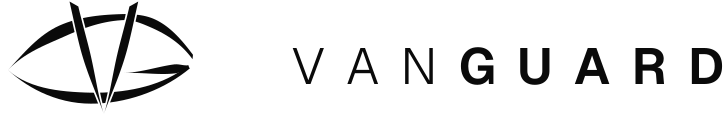

Vigilancia continua para tu producto.
Un ojo de pupila rasgada, hecho de trazos pesados con remates cortados en bisel. La G se escribe de un solo gesto: el ala superior, el párpado, el párpado inferior y la cuña del travesaño. La V es la pupila y va por encima de la G: dos hojas que la cruzan, abriéndole un hueco, y se cierran en una punta bajo el párpado. Un vigía que no parpadea.
Por debajo de 64 px se usa la versión compacta: más peso en cada trazo.
El nombre va en trazos (Geist 300 + 650, espaciado 0,42 em), a la derecha del símbolo y centrado en la línea de las esquinas del ojo. No se recompone a mano: se usa el archivo.


Todo en brand/logo/. Sin sufijo usan currentColor (toman el color del texto); -on-dark es hueso para fondos oscuros y -on-light es tinta para fondos claros.
Tinta#0A0A0A
Papel#F7F7F5
Hueso#EDEDEA · logo sobre tinta
Geist 300 / 650Geist Mono para datos